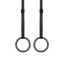

Ring Dead Hang
A passive hang from gymnastic rings. The free-rotating grip recruits more stabilisers in the hands, forearms, and shoulder girdle than a fixed bar.
Back · Gymnastic Rings · Intermediate

Muscles worked by the Ring Dead Hang
Primary
Secondary
Also called: wrist flexors, flexor carpi, forearm flexors, inner forearm.
Equipment

Gymnastic RingsAlso called: gymnastic rings, still rings, wood rings, olympic rings.
How to do the Ring Dead Hang
- Grip a pair of gymnastic rings with a neutral grip, palms facing each other.
- Hang with your arms fully extended and feet off the ground.
- Let the rings rotate naturally; do not fight the grip.
- Keep your shoulders engaged (no shrug to the ears) and core lightly braced.
- Hold for the desired duration.
Form tips
- Breathe steadily rather than holding your breath.
- Build hold duration gradually as your grip strengthens.
- Step down under control before your grip fails completely.
At a glance
| Body part | Back |
|---|---|
| Category | Strength |
| Force type | Static |
| Mechanic | Compound |
| Difficulty | Intermediate |
| Equipment | Gymnastic Rings |
| Goals | Hypertrophy, Strength |
| Tags | Knee safe, Shoulder safe, No axial load, Lower back safe |
| MET | 4.5 (metabolic equivalent, for calorie estimates) |
| Unilateral | No |
| Bodyweight | No |
| Dataset id | ring-dead-hang |
Ring Dead Hang in German & Spanish
| German | Ring Dead Hang |
|---|---|
| Spanish | Cuelgue Estático en Anillas |
Descriptions, instructions and tips ship in all three languages in the JSON.
Related exercises
Exercise data (JSON)
The record below is exactly what exercises.json ships for this exercise — names, descriptions, instructions and tips in English, German and Spanish.
{
"id": "ring-dead-hang",
"name_en": "Ring Dead Hang",
"name_de": "Ring Dead Hang",
"name_es": "Cuelgue Estático en Anillas",
"description_en": "A passive hang from gymnastic rings. The free-rotating grip recruits more stabilisers in the hands, forearms, and shoulder girdle than a fixed bar.",
"description_de": "Ein passiver Hang an Turnringen. Der frei rotierende Griff aktiviert mehr Stabilisatoren in Händen, Unterarmen und Schultergürtel als eine feste Stange.",
"description_es": "Un cuelgue pasivo en anillas de gimnasia. El agarre de rotación libre recluta más estabilizadores en las manos, los antebrazos y la cintura escapular que una barra fija.",
"category": "strength",
"force_type": "static",
"mechanic": "compound",
"difficulty": "intermediate",
"equipment": "rings",
"body_part": "back",
"primary_muscles": [
"forearm_flexors"
],
"secondary_muscles": [
"latissimus_dorsi",
"rectus_abdominis",
"trapezius"
],
"goals": [
"hypertrophy",
"strength"
],
"tags": [
"knee_safe",
"shoulder_safe",
"no_axial_load",
"lower_back_safe"
],
"variation_group": "static-hold",
"is_unilateral": false,
"is_bodyweight": false,
"instructions_en": [
"Grip a pair of gymnastic rings with a neutral grip, palms facing each other.",
"Hang with your arms fully extended and feet off the ground.",
"Let the rings rotate naturally; do not fight the grip.",
"Keep your shoulders engaged (no shrug to the ears) and core lightly braced.",
"Hold for the desired duration."
],
"instructions_de": [
"Greife ein Paar Turnringe im neutralen Griff, Handflächen zueinander.",
"Hänge mit vollständig gestreckten Armen, Füße vom Boden.",
"Lass die Ringe frei rotieren – kämpfe nicht dagegen an.",
"Halte die Schultern aktiv (nicht zu den Ohren ziehen) und den Rumpf leicht angespannt.",
"Halte für die gewünschte Dauer."
],
"instructions_es": [
"Agarra un par de anillas de gimnasia con agarre neutro, palmas enfrentadas entre sí.",
"Cuélgate con los brazos completamente extendidos y los pies fuera del suelo.",
"Deja que las anillas giren naturalmente; no luches contra el agarre.",
"Mantén los hombros activos (sin encogerlos hacia las orejas) y el core ligeramente apretado.",
"Mantén la posición durante el tiempo deseado."
],
"tips_en": [
"Breathe steadily rather than holding your breath.",
"Build hold duration gradually as your grip strengthens.",
"Step down under control before your grip fails completely."
],
"tips_de": [
"Steigere die Hängezeit schrittweise von Einheit zu Einheit.",
"Halte die Beine ruhig, damit du nicht ins Pendeln gerätst.",
"Steige am Ende kontrolliert ab, statt dich fallen zu lassen."
],
"tips_es": [
"Empieza con series cortas y aumenta el tiempo de forma progresiva.",
"Agarra fuerte con toda la mano, no solo con los dedos.",
"Baja apoyando los pies con control, no te sueltes de golpe."
],
"met": 4.5,
"images": {
"flat": {
"main": "images/flat/ring-dead-hang-main.webp"
}
}
}Fetch just this exercise
const { exercises } = await fetch(
"https://exercise-dataset.com/exercises.json"
).then(r => r.json());
const ex = exercises.find(e => e.id === "ring-dead-hang");Free for personal and commercial in-app use with attribution (“Exercise data by RepDB”) — see the license and ready-made attribution snippets. Redistributing the data as a dataset or API is not permitted.